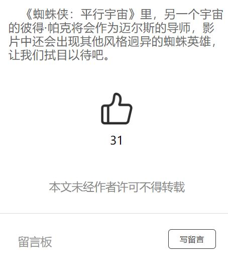

码微信小程序时对于主要功能的实现分析（用户阅读数、点赞和评论）
先放上自己的小程序：小深眼中的英雄宇宙
在制作小程序时，需要引入点赞和评论功能

点赞功能需要保存用户点赞后的状态，这里可以用StorageSync缓存来实现，类似一个轻便的数据库，里面存入了up_status的点赞状态字段
1 | ... |
阅读数和评论功能可以使用云服务器的数据库和云函数来实现CRUD操作，我这里直接使用小程序自带的云开发功能
在云服务器里创建好数据库后，利用云函数来操作数据库里的字段就可以了
例如：用户在点击某篇文章时执行数据库某条记录某个字段的+1操作，在进入文章页面时执行查询这个字段的函数，最后显示在页面上